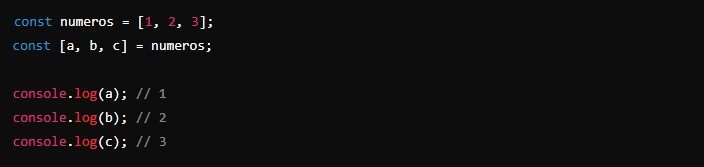
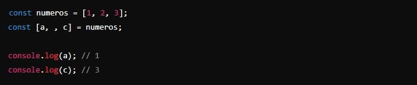
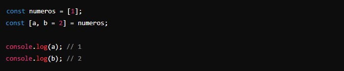
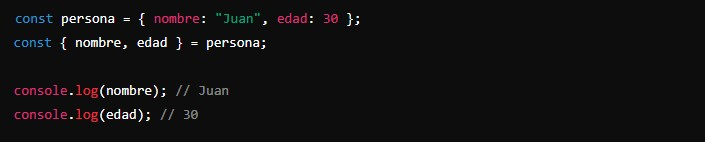
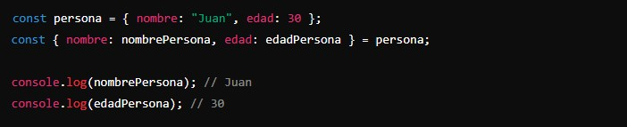
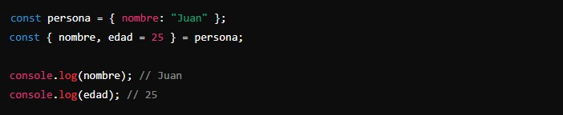
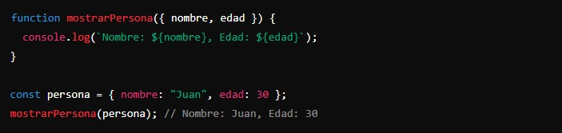
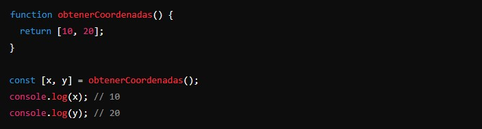
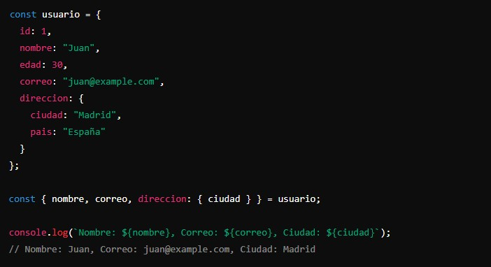

La deconstrucción de variables es una sintaxis que permite "desempaquetar" valores de arrays o propiedades de objetos en variables distintas. Esto puede simplificar el código y hacerlo más fácil de leer.
Vamos a ver cómo se usa con algunos ejemplos prácticos.
- Deconstrucción de Arrays:
La deconstrucción de arrays permite extraer valores de un array y asignarlos a variables de manera directa.
Ejemplo:
En este ejemplo, a toma el primer valor del array, b el segundo y c el tercero.
Puedes omitir elementos si no te interesan.
Puedes asignar valores por defecto que se usarán si el valor del array es indefinido.
 - Deconstrucción de Objetos:
La deconstrucción de objetos permite extraer propiedades de un objeto y asignarlas a variables con el mismo nombre.
Ejemplo:
Puedes asignar propiedades a variables con nombres diferentes.
Al igual que con los arrays, puedes asignar valores por defecto.
 - Deconstrucción en Funciones:
La deconstrucción es especialmente útil en funciones, tanto en los parámetros como en los valores de retorno.
Puedes usar la deconstrucción directamente en los parámetros de la función.
La deconstrucción también puede ser útil para desempaquetar los valores de retorno de una función.

Arrays:
- Puedes extraer valores y asignarlos a variables.
- Puedes omitir elementos y asignar valores por defecto.
Objetos:
- Puedes extraer propiedades y asignarlas a variables.
- Puedes asignar propiedades a variables con nombres diferentes y usar valores por defecto.
Funciones:
- La deconstrucción puede simplificar la manipulación de parámetros y valores de retorno.
En resumen:
¿Cuándo usar la deconstrucción?
- Simplicidad y legibilidad: La deconstrucción hace que el código sea más corto y fácil de leer.
- Extracción rápida de valores: Es útil cuando necesitas extraer múltiples valores de arrays o propiedades de objetos de manera eficiente.
- Manipulación de datos en funciones: Simplifica el acceso a datos en los parámetros y valores de retorno de las funciones.
- Ejemplo práctico: Supongamos que tenemos un objeto con información de un usuario y queremos extraer solo ciertos datos para mostrarlos. 